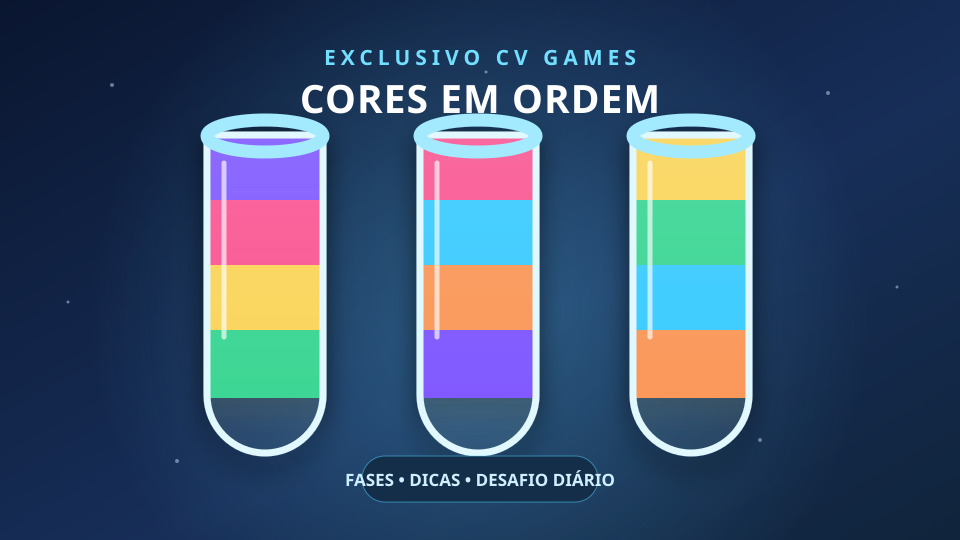

CAMPANHA
Fases em sequência
Resolva cada tabuleiro para liberar o próximo. As fases ficam salvas neste aparelho.
Melhor resultado: ainda sem fases concluídas.
ACESSO DE TESTE RESTRITO
Este jogo está disponível por enquanto apenas nos perfis locais educvv dev1 e educvv dev.
🧪 EXCLUSIVO CV GAMES
Separe as cores, pense alguns movimentos à frente e encontre a ordem perfeita.

ESCOLHA UM MODO
CAMPANHA
Resolva cada tabuleiro para liberar o próximo. As fases ficam salvas neste aparelho.
Melhor resultado: ainda sem fases concluídas.
DESAFIO DIÁRIO
Um tabuleiro novo por dia. Tente resolver com poucos movimentos e supere seu resultado.
Seu resultado de hoje: ainda não concluído.
Como jogar: toque em um tubo para selecionar a cor do topo e depois toque em outro tubo. Você pode despejar no tubo vazio ou sobre a mesma cor, respeitando o espaço disponível.
Um tubo completo deve ter quatro peças da mesma cor.
Demonstração: o anúncio ainda não está integrado. O contador de 10 segundos apenas simula a espera e não exibe publicidade.